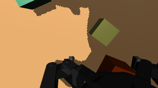
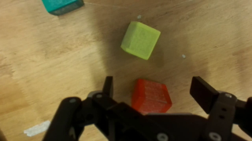
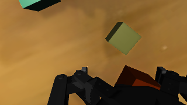
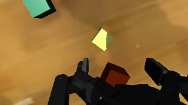
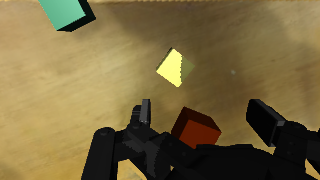
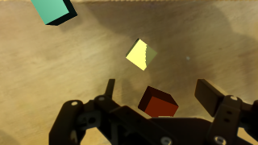
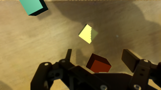

One wrist frame through every fix


1 · Plain sim render (10-15)
What GR00T saw in the first smoke test: flat MuJoCo colours, old scene geometry (table ~6 cm too high).
GR00T's planned lowest fingertip: not measured (old scene); smoke1: reached, hovered, never closed

2 · + projected table texture (10-15)
Table textured from the exterior camera's background plate; still the old geometry.
GR00T's planned lowest fingertip: not measured (old scene)

3 · + correct geometry (10-16/19)
Same render, rebuilt scene: table height from stereo, camera calibrated with metric anchors, bowl fix.
GR00T's planned lowest fingertip: −1.4 cm (G7; G3–G6: −1.2…−1.5)

4 · + table texture from the wrist video (G5)
Table mosaicked from the real wrist frames instead of the exterior camera: sharp real grain and colour.
GR00T's planned lowest fingertip: −0.7 cm (G5, G6)
5 · + rendered larger and shrunk like real frames
Rendered at 640×360 and area-averaged to 320×180 (no jagged edges).
GR00T's planned lowest fingertip: −0.5 cm (G6, at 1280×720)

6 · + real gripper (WristRenderV2)
Our gripper replaced by the real gripper image cut from the wrist video (real colour, focus blur, bolts).
GR00T's planned lowest fingertip: +0.8 cm (G7)

7 · + light fitted in the wrist view
Robot shadow from a light fitted to the real shadows seen by the wrist camera (near overhead, darker).
GR00T's planned lowest fingertip: +1.2 cm (G7) — current best that needs no real frame
Real wrist frame
The real ZED Mini image at the same moment.
GR00T's planned lowest fingertip: +2.4 / +2.6 cm (same image twice; noise 0.3 cm)